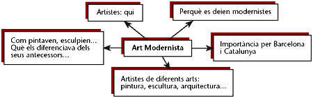
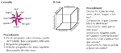
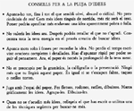
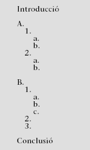
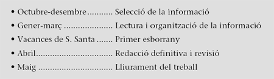
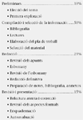

Planificació d'un treball

En els anteriors apartats d'expressió escrita hem vist diferents aspectes relacionats amb el procés d'elaboració d'un treball:

- Com es recull la informació.
- Com es selecciona i es guarda aquesta informació.
En aquesta unitat farem un pas més i veurem com es pot planificar un treball: quins passos cal seguir, com podem elaborar un esquema, com es poden relacionar les idees, etc. També farem alguns exercicis per tal de practicar el que s'ha explicat. De totes maneres, hauria de quedar ben clar que la millor manera de practicar el que anem veient en aquests temes és mitjançant l'aplicació pràctica en treballs que hàgiu de confegir per a altres matèries d'estudi. És aleshores quan heu de mirar de tenir en compte i de posar en pràctica els consells que us donem aquí.
 El procés de planificació
El procés de planificació
Planificar implica distribuir en el temps (horari) i en un espai una sèrie d'accions. Es planifica per estalviar temps i energia. Per a planificar un treball cal tenir clars els objectius i la finalitat que ha de tenir: què se'ns demana, qui el llegirà, què volem demostrar o aconseguir...
Un cop fixats aquests punts previs, hi ha diversos passos que cal seguir. Els enumerem breument per anar-los desglossant tot seguit:
|
1. Preparació d'un esquema inicial | |
De fet, el punt 3 forma part ja del pas següent, que veurem després.
1. Preparació d'un esquema inicial
A partir d'una segona lectura del material recollit i de l'esquema provisional -si en tenim- hem de passar a redactar un esquema inicial per al treball. Per a fer-ho, de vegades cal utilitzar alguna tècnica que ens ajudi a organitzar els coneixements i els materials que tenim sobre el tema del treball. Hi ha diferents maneres d'escometre aquesta feina. En donem alguns exemples i suggeriments amb la intenció de ser útils.
1.1. Generació d'idees
Com acabem de dir, hi ha diferents estils i maneres de planificar un treball, com d'abordar qualsevol escrit. Una és l'anomenada generació d'idees, consistent a buscar relacions de tota mena (després ja les ordenarem) entre un concepte clau (el central del treball) i altres conceptes. Així, si hem de fer un treball sobre l'art modernista, podríem trobar associacions com:

Fixem-nos que es tracta simplement d'una primera aproximació ben intuïtiva.
Un pas més endavant es pot fer formulant-nos preguntes clau: què, qui, quan, com, on, per què, amb quina finalitat... A partir de les respostes, podem començar a organitzar les idees.
Tot seguit transcrivim dos fragments del llibre La cuina de l'escriptura (de D. Cassany), que ens poden il·lustrar aquest punt.
|
 |
|

|
 |
|
1.2. Organització d'idees
El nostre objectiu és elaborar un esquema per al treball. Per això, després d'haver pensat sobre quines idees (conceptes o temes) hem de tractar-hi, ens interessa moltíssim trobar-hi una organització, un esquema.
Per a això, podem recórrer a diferents tècniques d'organització, de les quals n'enumerem breument dues:
- Mapa conceptual: la mateixa tècnica que ens ha servit per a generar idees, polida i revisada, pot ajudar-nos moltíssim a organitzar les idees. Per a això, cal tenir cura de jerarquitzar les idees, buscar les diferents categories i subcategories i establir les associacions entre idees i conceptes de manera correcta.
- El globus: consisteix a redactar, en un màxim d'una o dues pàgines, un resum d'allò que serà el treball. Un cop fet aquest resum, ja se'n poden redactar els paràgrafs que constituiran el treball. En donem un exemple del llibre d'I. de Puig, Cómo hacer un trabajo escrito:
| ||||||||

1.3. Elaboració de l'esquema
Tant del mapa conceptual ben elaborat, com del globus, és fàcil passar a un que tindrà una forma com la següent.

Alguns errors que s'han d'evitar són aquests:
- Construir l'esquema sense haver reunit bé totes les idees. Això provoca un text pobre.
- Decidir l'ordre de presentació d'un bloc abans que el general del text. Si no, ens podem trobar amb desordres i incoherències.
- Preveure pocs nivells jeràrquics de manera que en resultarà un treball poc articulat.
- Acumular massa blocs en el primer nivell jeràrquic, la qual cosa indica un treball deficient de jerarquització d'idees o un esquema massa farcit.
- Ajuntar idees sense una relació jeràrquica. Aquest defecte el notarem en rellegir l'escrit o en revisar l'esquema.
- Construir un esquema desequilibrat. Els blocs del mateix nivell jeràrquic han de tenir més o menys la mateixa complexitat.
2. Planificació del temps
La presentació d'un treball té una data fixa. Per això cal planificar i organitzar el temps. Una bona planificació ens evitarà el nerviosisme i el neguit d'última hora. Ens caldrà tenir en compte les diferents etapes del treball. Per a un hipotètic cas de disposar de tot un curs, un calendari possible seria:

És clar que caldrà tenir en compte les particularitats de cada treball i les circumstàncies en què l'hàgim de confeccionar. Igualment convé no deixar tancades les diferents etapes, per si sorgeixen novetats o fets que ens obliguin a repensar l'esquema o a incloure-hi nous elements.
Una proposta de distribució en percentatges que fa I. de Puig és la següent:
|
 |
|
Exercicis
1) Per a triar el mètode més idoni.
a) Imagineu que els professionals de la columna de l'esquerra han de fer treballs de les temàtiques que trobareu a la columna de la dreta. Cap d'ells no té una formació específica sobre el tema que li ha tocat de fer. Quina manera els recomanaríeu d'emprar per enfocar el treball?
1. Pediatre a. L'ús dels adobs a l'hort.
2. Pagès b. La reproducció cel·lular.
3. Biòloga c. La pastisseria austríaca.
4. Pastissera d. L'alletament en nens.
Us deveu haver adonat que l'únic que hem fet a les columnes anteriors és assignar un treball propi d'una professió a una altra.
b) Establiu les relacions més idònies entre professions i treballs.
|
Pediatre |
|
|
Pagès |
|
|
Biòloga |
|
|
Pastissera |
c) Amb aquest resultat torneu a recomanar a cadascú un mètode per enfocar el seu treball.
|
Pediatre |
||
|
Pagès |
||
|
Biòloga |
||
|
Pastissera |

2) Prepareu un esquema per redactar els documents següents:
A. L'acta d'una reunió (d'una associació de veïns...).
B. El currículum per a sollicitar un lloc de treball.
C. La recensió d'una pel·lícula.
3) Ordeneu les idees següents amb vista a un treball sobre L'alimentació i la dieta al nostre país:
- Hi ha persones obsessionades per les calories dels aliments, no fan més que parlar del poder calòric del que mengen.
- Alguns es pesen contínuament i sempre estan a dieta.
- Els que segueixen un règim solen avorrir els que els envolten amb els seus problemes de pes.
- Al nostre país es menja molt bé.
- És necessari trobar un equilibri entre el menjar sa i el bon menjar. Les dones que segueixen una dieta obliguen la seva família també a seguir-la.
- Les dietes portades a l'extrem poden ser perjudicials.
- Una dieta massa dràstica no és útil perquè el pes es recupera ràpidament i en més quantitat.
- És estrany que durant mil·lennis la humanitat hagi patit per la manca d'aliments i ara, en canvi, tingui a l'abast una abundància que el perjudica.
- Cal començar a menjar bé des de petits: un nen gras serà probablement un adult obès.
- Entre les dietes més famoses, s'hi troben: la dissociada, la dieta per punts i la Scardale.
- Els últims anys s'ha parlat molt de malalties alimentàries com l'anorèxia i la bulímia.
- Els bons hàbits alimentaris s'adquireixen a la infància. El fet de ser gras o prim depèn també de l'herència.
- Durant el menjar és fàcil sentir parlar de pressió sanguínia o de colesterol, sobretot als que no són joves.
- S'ha relacionat l'aparició de determinats tumors amb una alimentació defectuosa.
- A les societats riques abunden les persones obeses.
- Les regles bàsiques per a menjar bé són poques: molta fruita i verdura, pocs greixos (si pot ser d'origen vegetal) i sucres. Entre la carn i el peix, és preferible el peix; i entre la carn blanca i la vermella, la blanca.
- La dieta mediterrània, típica dels Països Catalans d'altres èpoques i dels països vora el Mediterrani, es considera sana: es compon de verdura, amanida i fruita.
- Els nens mengen sovint berenars preparats que són massa rics en greixos i sucres.
- El "menjar ràpid" consistent en hamburgueses i patates fregides és poc sa (massa greixos).
4) Tres estudiants, un de literatura, un de filosofia i un de criminologia, feien tertúlia sobre els seus treballs. Cadascun fa un treball sobre un concepte del tema del qual és estudiant. Xerrant xerrant, involuntàriament se'ls barregen les fitxes d'anotacions que tenen i queden de la manera següent:
Imitació de manera burlesca d'una obra seriosa / Assassinar / Filosofia / Paròdia / Nihilisme / Matar algú amb premeditació i traïdoria / Literatura / Actitud filosòfica que nega l'existència de la realitat substancial o la possibilitat de conèixer-la de la realitat substacial o la possibilitat de conèixer-la / Criminologia.
Podeu posar una mica d'ordre a aquestes notes?
- Intenteu classificar els apunts tenint en compte aquests tres grups: temes, conceptes i definicions.
- I associeu cada tema amb el concepte i la definició que li pertoqui.
Us serà útil establir les relacions corresponents amb aquest quadre:
5) Extraieu, en forma de notes, les idees essencials d'aquesta selecció d'informació que ha fet un estudiant per al seu treball d'història sobre les relacions entre la Catalunya naixent i l'Al-Andalus.
| ||||||||
6) Llegiu el fragment següent que ha seleccionat un estudiant per a un treball sobre el nacionalisme jueu i feu una selecció de preguntes que en faríeu. Recordeu que aquest fragment no és tota la informació de què disposa aquest estudiant i, per tant, les preguntes no les ha de resoldre exclusivament el text.
| ||||||||